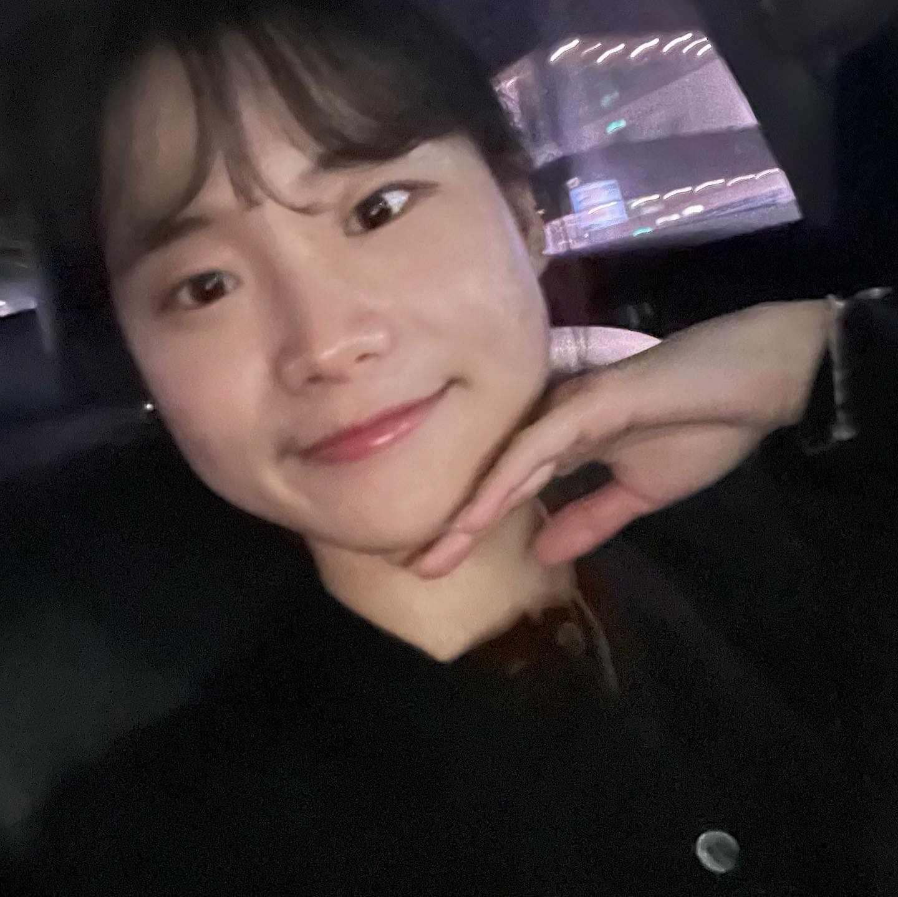
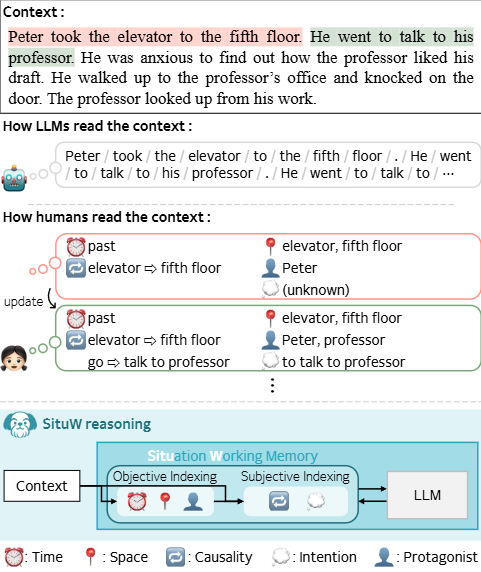
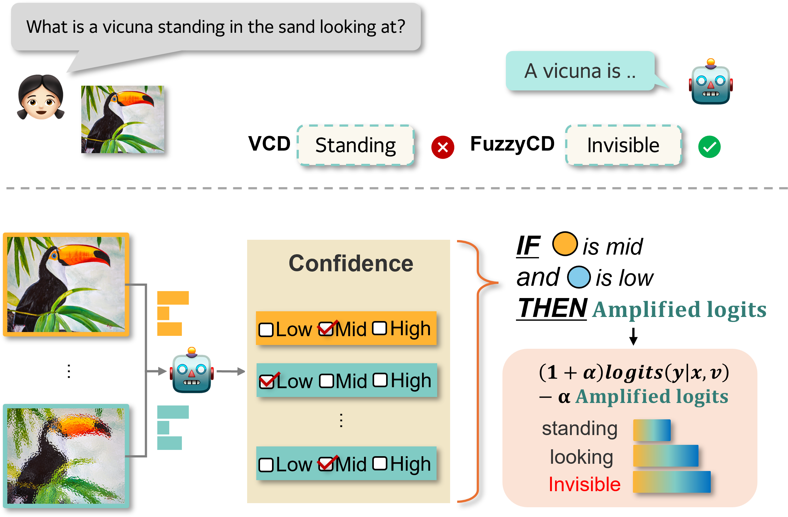
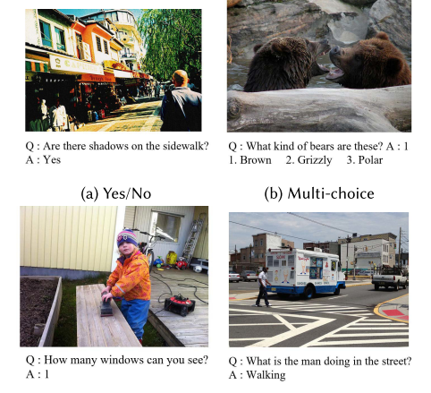
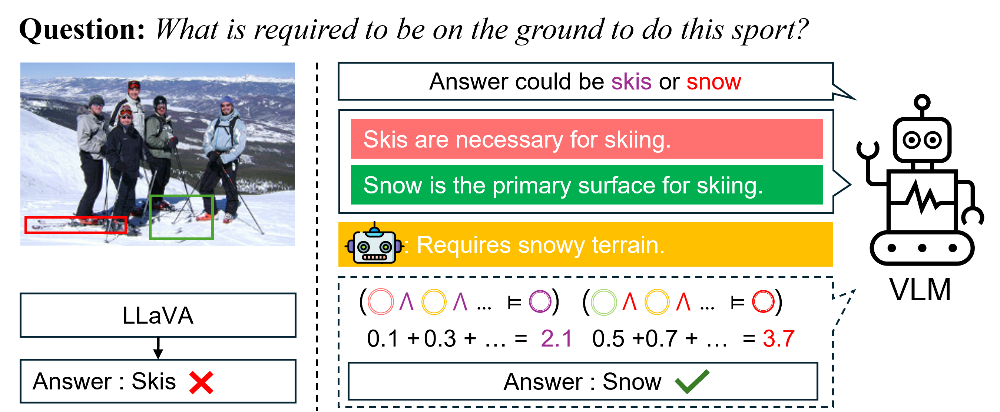

|
Jieun Kim Hi! I'm a Ph.D. student at the Soft Computing Lab at Yonsei University, advised by Prof. Sung-Bae Cho. My research focuses on vision, multimodal learning, and trustworthy AI (XAI) . I'm particularly interested in understanding how models perceive and reason about the visual world, and how we can ensure their outputs are interpretable and reliable. Currently, I am actively seeking research internship opportunities where I can contribute to and collaborate on cutting-edge problems in vision and multimodal AI. |
 |
News |
| 🎉 2025.06 : One paper on Mitigating Hallucination of Visual Language Model is accepted at ICCV 2025! |
Research |
|  |
Context-aware Logical Reasoning in Language Model via Situation Working
Memory
Jieun Kim, YoungHae Choi, Seoha Lim, Sung-Bae Cho Under Review, 2025 |
|  |
Fuzzy Contrastive Decoding to Alleviate Object Hallucination in Large
Vision-Language Models
Jieun Kim, Jinmyeong Kim , Yoonji Kim, Sung-Bae Cho ICCV, 2025 page / paper |
|  |
Visual Question Answering: A Survey of Methods, Datasets, Evaluation, and
Challenges
Byeong Su Kim, Jieun Kim, Deokwoo Lee, Beakcheol Jang ACM Computing Surveys, 2025 (IF 23.8) paper |
|  |
LoCoT: Logical Chain-of-Thought Prompting for Knowledge-Based Visual
Reasoning
Jieun Kim, Gatum Erlangga, Yoon Choi, Sung-Bae Cho Under Review, 2024 |

|
FTT: Fourier Transform based Transformer for Brain CT Report
Generation
Jieun Kim, Byeong Su Kim, Insung Choi, Zepa Yang and Beakcheol Jang ICAIIC, 2024 |
|
|
Facial Expression Recognition using Visual Transformer with Histogram of
Oriented Gradients
Jieun Kim, Ju O Kim, Seungwan Je, Deokwoo Lee Electronic Imaging, Vol. 7, oral 19 Jan 2023 |
|
|
Facial Expression Recognition Robust to Occlusion using Spatial Transformer
Network with Triplet Loss Function
Jieun Kim, Eung-Joo Lee, Deokwoo Lee SPIE 12101, Pattern Recognition and Tracking , 2022 |
|
Design and source code from Jon Barron |